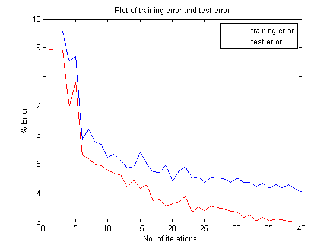

Contents
tic;
Load Dataset
[X_train, Y_train, X_test, Y_test] = loadData('partE');
epoch = 40;
i = zeros(epoch,1);
p = zeros(epoch,1);
theta = zeros(epoch,1);
alpha = zeros(epoch,1);
weight = ones(size(Y_train))/size(Y_train,1);
train_error = zeros(epoch,1);
test_error = zeros(epoch,1);
for t = 1:epoch
Find best classifier with current weights
epsilon = 1;
for j = 1:size(X_train,2)
c = unique(X_train(:,j));
for k =1:length(c)
th = c(k);
error = sum(weight.*( Y_train ~= sign( (X_train(:,j) - th) + ~logical(X_train(:,j) - th)) ));
pTest = 1;
if error > 0.5
error = 1 - error;
pTest = -1;
end
if error < epsilon
epsilon = error;
i(t) = j;
theta(t) = th;
p(t) = pTest;
end
end
end
alpha(t) = 0.5*log((1-epsilon)/epsilon);
label = (Y_train ~= sign(p(t)*(X_train(:,i(t)) - theta(t))));
weight(label) = weight(label)*exp(alpha(t));
weight(~label) = weight(~label)*exp(-alpha(t));
weight = weight/sum(weight);
fprintf('Iteration = %d \n',t);
Y_train_predicted = zeros(size(Y_train));
for k = 1:t
Y_train_predicted = Y_train_predicted+ alpha(k)*sign(p(k)*(X_train(:,i(k)) - theta(k)));
end
Y_train_predicted = sign(Y_train_predicted);
train_error(t) = sum(Y_train ~= Y_train_predicted)*100/length(Y_train);
fprintf('Training error = %d \n',train_error(t));
Y_test_predicted = zeros(size(Y_test));
for k = 1:t
Y_test_predicted = Y_test_predicted + alpha(k)*sign(p(k)*(X_test(:,i(k)) - theta(k)));
end
Y_test_predicted = sign(Y_test_predicted);
test_error(t) = sum(Y_test ~= Y_test_predicted)*100/length(Y_test);
fprintf('Test error = %d \n',test_error(t));
Iteration = 1
Training error = 8.940000e+00
Test error = 9.580000e+00
Iteration = 2
Training error = 8.920000e+00
Test error = 9.580000e+00
Iteration = 3
Training error = 8.920000e+00
Test error = 9.580000e+00
Iteration = 4
Training error = 6.960000e+00
Test error = 8.540000e+00
Iteration = 5
Training error = 7.820000e+00
Test error = 8.720000e+00
Iteration = 6
Training error = 5.300000e+00
Test error = 5.840000e+00
Iteration = 7
Training error = 5.180000e+00
Test error = 6.200000e+00
Iteration = 8
Training error = 4.980000e+00
Test error = 5.760000e+00
Iteration = 9
Training error = 4.940000e+00
Test error = 5.680000e+00
Iteration = 10
Training error = 4.800000e+00
Test error = 5.220000e+00
Iteration = 11
Training error = 4.660000e+00
Test error = 5.340000e+00
Iteration = 12
Training error = 4.600000e+00
Test error = 5.120000e+00
Iteration = 13
Training error = 4.200000e+00
Test error = 4.860000e+00
Iteration = 14
Training error = 4.440000e+00
Test error = 4.900000e+00
Iteration = 15
Training error = 4.160000e+00
Test error = 5.400000e+00
Iteration = 16
Training error = 4.280000e+00
Test error = 5
Iteration = 17
Training error = 3.720000e+00
Test error = 4.720000e+00
Iteration = 18
Training error = 3.760000e+00
Test error = 4.700000e+00
Iteration = 19
Training error = 3.540000e+00
Test error = 4.960000e+00
Iteration = 20
Training error = 3.620000e+00
Test error = 4.400000e+00
Iteration = 21
Training error = 3.680000e+00
Test error = 4.740000e+00
Iteration = 22
Training error = 3.880000e+00
Test error = 4.900000e+00
Iteration = 23
Training error = 3.340000e+00
Test error = 4.500000e+00
Iteration = 24
Training error = 3.500000e+00
Test error = 4.540000e+00
Iteration = 25
Training error = 3.380000e+00
Test error = 4.360000e+00
Iteration = 26
Training error = 3.540000e+00
Test error = 4.520000e+00
Iteration = 27
Training error = 3.480000e+00
Test error = 4.500000e+00
Iteration = 28
Training error = 3.440000e+00
Test error = 4.480000e+00
Iteration = 29
Training error = 3.360000e+00
Test error = 4.360000e+00
Iteration = 30
Training error = 3.340000e+00
Test error = 4.500000e+00
Iteration = 31
Training error = 3.160000e+00
Test error = 4.360000e+00
Iteration = 32
Training error = 3.240000e+00
Test error = 4.360000e+00
Iteration = 33
Training error = 3.040000e+00
Test error = 4.220000e+00
Iteration = 34
Training error = 3.160000e+00
Test error = 4.320000e+00
Iteration = 35
Training error = 3.040000e+00
Test error = 4.160000e+00
Iteration = 36
Training error = 3.100000e+00
Test error = 4.280000e+00
Iteration = 37
Training error = 3.080000e+00
Test error = 4.180000e+00
Iteration = 38
Training error = 3.020000e+00
Test error = 4.280000e+00
Iteration = 39
Training error = 3
Test error = 4.140000e+00
Iteration = 40
Training error = 3
Test error = 4.020000e+00
end
figure();
plot(train_error,'r');
hold on
plot(test_error,'b');
xlabel('No. of iterations ')
ylabel('% Error')
legend('training error','test error')
title('Plot of training error and test error');
toc;

Elapsed time is 571.672872 seconds.